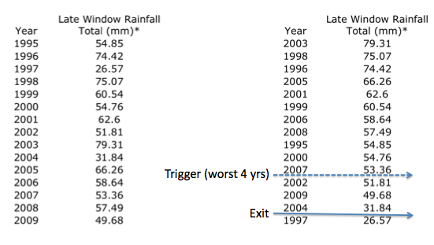

3. Checkpoint Answer Key: Setting Triggers and Exits

This initial draft index sets the trigger and exit for a contract that would have paid out four times in the past fifteen years. Depending on the community reaction to the resulting payouts, the trigger and exit could be adjusted to reflect different types of payouts. For example, if the trigger was set for the worst 5 years instead of the worst 4, then the contract will pay out more often, but note that this will also affect the premium (making the contract more expensive to purchase). What the appropriate trigger and exit value should be is a process to be determined through interaction with the local community.
Answers
- What is the Exit value for this contract? 27 mm
- Choose a value to Trigger the contract: 53 mm (There are multiple correct answers)